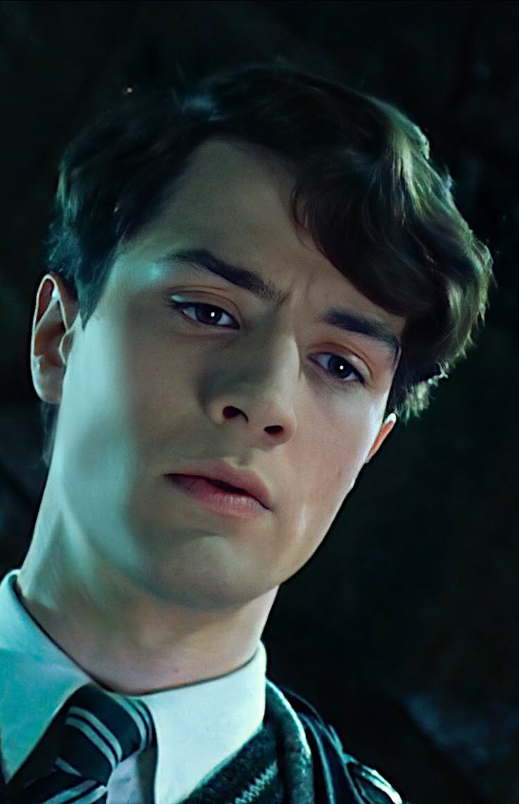

A casa Sonserina foi fundada por Salazar Slytherin, que acreditava que apenas bruxos de sangue puro deveriam ser admitidos em Hogwarts. Ele via a astúcia e a ambição como qualidades essenciais para os membros da casa. Os sonserinos são conhecidos por sua busca implacável pelo poder e pelo sucesso, muitas vezes fazendo uso de estratégias inteligentes e calculistas para alcançar seus objetivos. Embora a ideologia de Salazar tenha sido controversa, essas qualidades permanecem como pilares da casa, definindo a personalidade dos alunos que pertencem a ela.
Além de ambição, a lealdade e a persistência também são características importantes dos sonserinos. Seus membros não desistem facilmente de seus objetivos e estão dispostos a ir até o fim para alcançar o que desejam, mesmo que isso exija sacrifícios ou decisões difíceis. A serpente, símbolo da casa, é um reflexo dessa persistência, além de representar a inteligência estratégica de seus membros. A casa valoriza aqueles que sabem como se manter firmes em suas escolhas e são capazes de usar sua astúcia para ultrapassar obstáculos, não importa quão difíceis sejam.

A busca pelo poder é uma característica central da Sonserina, e isso está diretamente relacionado à rivalidade histórica com Gryffindor, a casa que valoriza a coragem e a honra. Enquanto os grifinórios buscam o bem e a justiça, os sonserinos muitas vezes são vistos como mais dispostos a usar meios questionáveis para alcançar seus fins. Esse desejo de poder se reflete em muitos dos membros notáveis da Sonserina, como Tom Riddle (Voldemort), Draco Malfoy e Regulus Black, cujas trajetórias mostram que a busca pelo poder pode levar a escolhas extremas, nem sempre ligadas a questões morais.
O legado da Sonserina é, sem dúvida, um dos mais complexos e contraditórios de Hogwarts. A casa é amplamente associada ao desejo de poder, à ambição desmedida e à busca pela perfeição. No entanto, ela também carrega a astúcia e a inteligência estratégica, qualidades que não são exclusivamente negativas. Alguns sonserinos, como Severus Snape, demonstram que as escolhas da casa podem ser moldadas por princípios mais elevados, e que ambição e persistência podem ser redimidas. A Sonserina continua a ser vista como uma casa que, embora frequentemente associada ao lado sombrio da magia, possui um legado de complexidade, liderança e potencial para transformação.
